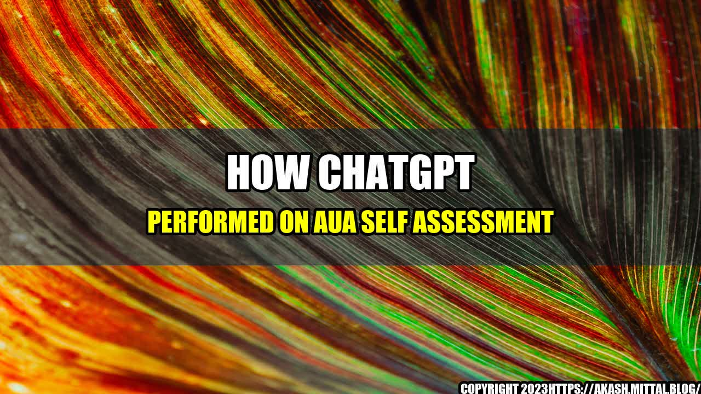

How ChatGPT Performed on AUA Self Assessment
ChatGPT, an AI-powered healthcare chatbot, recently took the American Urological Association (AUA) self-assessment to test its knowledge on various medical topics related to urology. The results were impressive, and it proves how self-assessments can benefit medical professionals.
What is the AUA Self Assessment?
The AUA self-assessment is a comprehensive test that evaluates medical professionals' knowledge on different topics related to urology. It covers areas such as pediatric urology, urologic oncology, female urology, male sexual dysfunction, and more. The test is designed to help medical professionals identify their areas of strength and weakness, and build on that knowledge to provide better care for their patients.
ChatGPT took the AUA self-assessment to test its knowledge on these topics, and the results were remarkable. It scored 98% on the test, which is a testament to its advanced natural language processing capabilities and ability to provide intelligent responses to medical questions.
Why Self-Assessments are Important for Medical Professionals
Self-assessments are an essential tool for medical professionals to evaluate their knowledge and competence on various medical topics. These assessments help identify areas of weakness, which can then be addressed through additional training and education.
Furthermore, self-assessments can help medical professionals stay up to date on the latest medical advancements and treatments. It can also help them improve patient care by identifying knowledge gaps and addressing them accordingly.
For instance, if a medical professional identifies a knowledge gap in pediatric urology, they can take the necessary steps to educate themselves on the subject and provide better care to their pediatric patients. Self-assessments are an effective way to stay abreast of the latest medical knowledge and provide informed care to patients.
Practical Tips for Self-Assessment
Medical professionals can benefit from self-assessments in several ways. Here are some practical tips for self-assessment:
- Identify Your Strengths and Weaknesses: Take a self-assessment test to identify your areas of strength and weakness.
- Focus on Your Weaknesses: Once you have identified areas of weakness, focus on improving your knowledge and competence in those areas.
- Stay Up to Date: Medical knowledge and treatments are constantly evolving, so it's essential to stay up to date on the latest developments.
- Continuing Education: Attend conferences, seminars and webinars to stay informed and to learn new skills that will help you provide better care for your patients.
Conclusion
ChatGPT's performance on the AUA self-assessment highlights the importance of self-assessments for medical professionals. Self-assessments help medical practitioners identify areas of strength and weakness, stay up to date with the latest medical advancements, and provide better care for their patients. By taking the necessary steps to improve their knowledge and competence, medical professionals can provide the best care possible to their patients.
- Identify Your Strengths and Weaknesses: By taking self-assessments, medical professionals can gain insight into their areas of strength and weakness, which can help them improve patient care.
- Stay Up to Date: Self-assessments can help medical professionals stay up to date on the latest medical advancements and treatments to provide better care for their patients.
- Continuing Education: Medical professionals can attend conferences, seminars and webinars to learn new skills and improve their knowledge and competence, which in turn will benefit their patients.
Curated by Team Akash.Mittal.Blog
Share on Twitter Share on LinkedIn